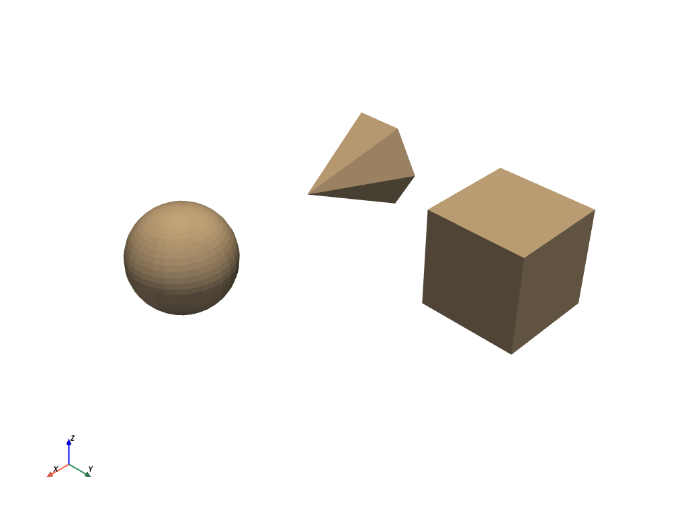
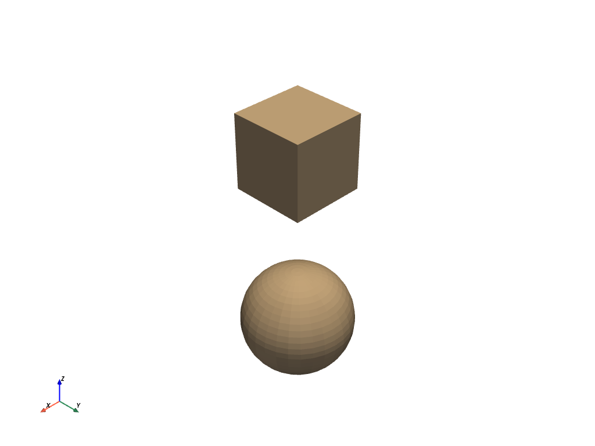

pyvista.MultiBlock¶
- class MultiBlock(*args, **kwargs)¶
反復可能な多数のデータセットを保持する複合クラス．
これはVTKで
vtkMultiBlockDataSetクラスをラップ/拡張し，これらのデータセットを簡単にプロットし，Python的な方法でコンポジットを使用できるようにします．MultiBlockはリストや辞書のようなもので，インデックスによってこのデータ構造を繰り返し処理することができ，文字列名によってブロックにアクセスすることもできます．例
>>> import pyvista as pv
Create empty composite dataset
>>> blocks = pv.MultiBlock()
Add a dataset to the collection.
>>> sphere = pv.Sphere() >>> blocks.append(sphere)
Add a named block.
>>> blocks["cube"] = pv.Cube()
Instantiate from a list of objects.
>>> data = [pv.Sphere(center=(2, 0, 0)), pv.Cube(center=(0, 2, 0)), ... pv.Cone()] >>> blocks = pv.MultiBlock(data) >>> blocks.plot()
 Instantiate from a dictionary.
>>> data = {"cube": pv.Cube(), "sphere": pv.Sphere(center=(2, 2, 0))} >>> blocks = pv.MultiBlock(data) >>> blocks.plot()
 Iterate over the collection
>>> for name in blocks.keys(): ... block = blocks[name]
>>> for block in blocks: ... surf = block.extract_surface() # Do something with each dataset
メソッド
MultiBlock.add_field_array(scalars, name[, deep])フィールドデータを追加します。
MultiBlock.add_field_data(array, name[, deep])フィールドデータを追加します。
MultiBlock.append(dataset)データセットを次のブロックインデックスに追加します．
MultiBlock.cell_centers([vertex, progress_bar])このデータセットのセルの中心に点を生成します．
データから日付へのセル変換
MultiBlock.clean([empty])Nullブロックをすべて削除します．
すべてのフィールドデータを削除します．
すべてのフィールドデータを削除します．
MultiBlock.clip([normal, origin, invert, ...])原点と法線を指定して，データセットを平面でクリップします．
MultiBlock.clip_box([bounds, invert, ...])境界によって定義された境界ボックスによってデータセットをクリップします．
MultiBlock.combine([merge_points, tolerance])すべてのブロックを1つの非構造化グリッドにまとめます。
MultiBlock.compute_cell_sizes([length, ...])1 D (長さ) ，2 D (面積) ，および3 D (体積) セルのサイズを計算します．
MultiBlock.copy([deep])マルチブロックのコピーを返します。
MultiBlock.copy_attributes(dataset)入力データセットオブジェクトのデータ属性をコピーします．
別のオブジェクトからこのオブジェクトにpyvistaメタデータをコピーします．
MultiBlock.copy_structure(dataset)入力データセットオブジェクトの構造(ジオメトリとトポロジ)をコピーします．
MultiBlock.deep_copy(to_copy)このデータオブジェクトをディープコピーとして別のデータオブジェクトで上書きします。
MultiBlock.elevation([low_point, ...])データセットにスカラー値を生成します．
MultiBlock.extract_all_edges([progress_bar])データセットのすべての内部/外部エッジをPolyDataとして抽出します．
すべてのブロックのジオメトリをサーフェスに抽出します。
MultiBlock.get(index)インデックスまたは名前でブロックを取得します．
MultiBlock.get_block_name(index)指定したインデックスのブロック名を文字列で取得します．
すべてのブロックにわたる配列名の最小値/最大値を取得します．
ブロック名でインデックス番号を検索します．
MultiBlock.head([display, html])このデータセットのヘッダ統計情報を取得します．
データセット内のすべてのブロック名を取得します．
イテレータから次のブロックを取得します．
MultiBlock.outline([generate_faces, nested, ...])この複合データセット内のすべてのブロックの全エクステントのアウトラインを作成します．
MultiBlock.outline_corners([factor, nested, ...])この複合データセットのすべてのブロックのコーナーのアウトラインを作成します．
MultiBlock.plot([off_screen, full_screen, ...])vtkまたはnumpyオブジェクトをプロットします．
点データをセルデータに変換します．
MultiBlock.pop(index)指定したインデックスのブロックをポップします．
MultiBlock.save(filename[, binary, texture])このvtkオブジェクトをファイルに保存します．
MultiBlock.set_block_name(index, name)指定したインデックスにブロックの文字列名を設定します．
MultiBlock.shallow_copy(to_copy)指定されたメッシュをこのメッシュに浅くコピーします．
MultiBlock.slice([normal, origin, ...])指定した原点および法線ベクトル方向の平面でデータセットをスライスします．
MultiBlock.slice_along_axis([n, axis, ...])指定した軸に沿って，入力データセットのスライスを多数作成します．
MultiBlock.slice_along_line(line[, ...])パスとしてpolyline/splineを使用してデータセットをスライスします．
MultiBlock.slice_orthogonal([x, y, z, ...])3つの直交平面上のデータセットから3つの直交スライスを作成します．
MultiBlock.triangulate([inplace, progress_bar])すべて三角形のメッシュを取得します．
ネストされたすべてのデータ構造がPyVistaデータセットとしてラップされていることを確認します．
アトリビュート
データセットオブジェクトの実際のサイズを取得します．
ブロック間の境界の最小/最大を検索します．
境界ボックスの中心を取得します．
DataSetAttributesとしてvtkFieldDataを取得します．
DataSetAttributesとしてFieldData を取得します．
境界ボックスの対角線の長さを取得します．
基盤となるVTK C++オブジェクトのアドレスを取得します。
ブロックセットの総数を取得します．
このデータセット内のすべてのメッシュの合計ボリュームを取得します．